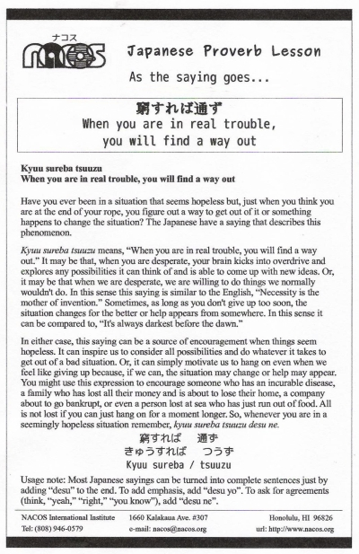

Kyuu sureba tsuuzu
When you are in real trouble, you will find a way out
Have you ever been in a situation that seems hopeless but, just when you think you are at the end of your rope, you figure out a way to get out of it or something happens to change the situation? The Japanese have a saying that describes this phenomenon.
Kyuu sureba tsuuzu means, “When you are in real trouble, you will find a way out.” It may be that, when you are desperate, your brain kicks into overdrive and explores any possibilities it can think of and is able to come up with new ideas. Or, it may be that when we are desperate, we are willing to do things we normally wouldn't do. In this sense this saying is similar to the English, “Necessity is the mother of invention.” Sometimes, as long as you don't give up too soon, the situation changes for the better or help appears from somewhere. In this sense it can be compared to, “It's always darkest before the dawn.”
In either case, this saying can be a source of encouragement when things seem hopeless. It can inspire us to consider all possibilities and do whatever it takes to get out of a bad situation. Or, it can simply motivate us to hang on even when we feel like giving up because, if we can, the situation may change or help may appear. You might use this expression to encourage someone who has an incurable disease, a family who has lost all their money and is about to lose their home, a company about to go bankrupt, or even a person lost at sea or in the middle of a desert who has just run out of food. All is not lost if you can just hang on for a moment longer.
So, whenever you are in a seemingly hopeless situation remember, kyuu sureba tsuuzu desu ne.
Usage note: Most Japanese sayings can be turned into complete sentences just by adding “desu” to the end. To add emphasis, add “desu yo”. To ask for agreements (think, “yeah,” “right,” “you know”), add “desu ne”.

| © 1995-2013 NACOS International Institute. All Rights Reserved. |